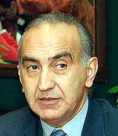
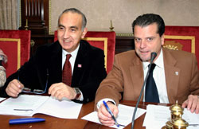

De Francisco
 De: La Frikipedia, la enciclopedia extremadamente seria.
De: La Frikipedia, la enciclopedia extremadamente seria.

|
ATENCIÓN
El autor de este artículo pide una ayudita. Porque es más triste de robar que de pedir. Se le han terminado las ideas y pide de rodillas a los frikipedistas (más listos, inteligentes y guapos que él) que le ayuden a terminar o mejorar su obra.
|
 Al carecer de cilios y flagelos; los protozoos nacen calvos. Los implantes de pelo son cedidos por
Mario Amilivia.
Es el otro hijo bastardo de Darth Vader, y por ello hermano de Mario Amilivia, pero feo, calvo y sin sentimientos. Su conocimiento en el Lado Oscuro le hizo (casi) inmortal, al igual que Lord Darth Plagueis.
Protografía
- Nace en 1949 de meiosis asintótica de una larva de oruga sudafricana dorada (mujer burguesa llena de joyas, según cuenta la leyenda) en Fachadolid.
- En 1952 traiciona a la profesora del parbulario admitiendo que les deja pintar con lápiz rojo.
- En 1971 guía a los grises hacia la casita de pueblo donde sus mejores amigos planeaban repartir folletos sobre un curso de como ser ambidiestro, traicionándoles así. Sus "amigos" son fusilados tres días después, disparando él mismo al último de ellos.
- En 1972 se queda calvo.
- En 1975 hace luto durante 3 años por la muerte de Francisco Franco
- En 1980 conoce a Mario Amilivia y planean conquistar el mundo.
- En 1982 logra que, el antiguo Reino de Casilla.
- En 1986 reconstruye León junto al Cid y planean la destrucción de La Tierra.
- En 1988 distribuye el Virus Omega en una capaña navideña, para intentar conquistar el mundo junto a la CIA, traicionando así al Cid.
 Los amos leoneses del mal, planeando conquistar el mundo.
- En 1987 soborna a los marcianos para que desaparezcan concejales en León para ocupar bien el puesto.
- En 1991 funda la UPL (Union de Paletos Leoneses).
- En 1993 se alia de nuevo con El Cid, traicionando a la CIA.
- En 1996 traiciona y calcifica al Cid en la Plaza de Santo Domingo.
- En 2002 se une a la multinacional Mercadona para conquistar el mundo.
- En 2004 vende la ciudad de León a la empresa de UPL y al PSOE. Link a la noticia.
- En el año 2006 se fusiona físicamente con Mario Amilivia y forman un mega robot gigante con el que traiciona a Mercadona.
- En el año 2007 excreta a Mario Amilivia por el ano del mega-robot y así le traiciona a él también.
- Muere en el año 2010 por una ingestion de gambas cuando le invitó a cenar David Bisbal.
Autor(es):
- Kenedhor
- Haakjvork
- Doctor grijander
- Cibercrank
- God of trolling
Frikipedia 2005-2016, Licencia
GFDL 1.2 - Extraído por FrikiLeaks